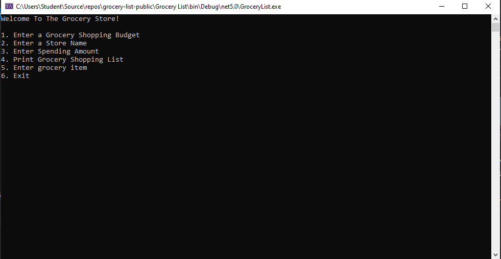

About Me
I am a student at We Can Code It. My expected date of completing the C Sharp program is August 21, 2021.
Upon graduation I will be able to perform code using C Sharp, HTML, CSS, and JavaScript.
Contact:
pearlreed22@outlook.com
github linkedinThese are the projects I've worked on or built:
Grocery List (budget assistance) Skills used: C#, Git, Lists, Methods
These are some team projects that I've worked on: